每日推荐

前不久，我们教大家
如何做（可以点开试试）和（可以点开哦），
收到不少粉丝问，可否多教些其它关于鸡的菜。
于是我们找到了这位，
长相如他的姓氏般憨厚的大厨，
教大家熬一锅鸡汤。
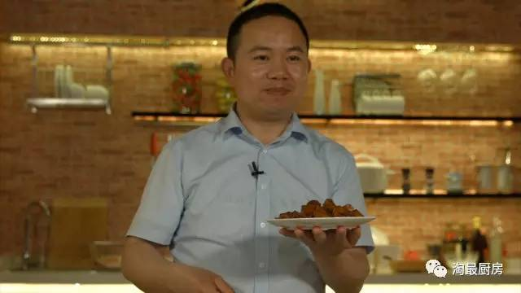
田头大叔 熊孝武
浙菜大厨 从业23年
然后一个人跑去山里老家养了1年鸡...
就知道怎样养鸡才能出好鸡汤
煲鸡汤
不需要太多材料，多了会影响鸡的本味；也不需要特别的厨艺，只要有足够的耐心，就可以熬出一锅鲜美的鸡汤。
暖心鸡汤
◇材料和步骤都超简单 超简单 超简单◇
老母鸡 1只| 黑木耳 OR 春笋 适量 | 盐 半勺
剂量标准：
文中所有的“勺”，都以右图的汤匙为基准
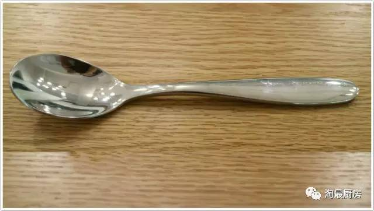
准备工作
整鸡分割
将鸡屁股切除，
切开鸡脖、鸡爪，从关节部位切开四肢，
将鸡胸对切，一分为二即可
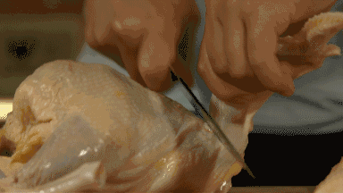
TIPS:从关节部位切开，可避免骨髓流出
煲出的汤更清透
下锅煲汤
把鸡放入锅内，加入辅料黑木耳或玉兰笋
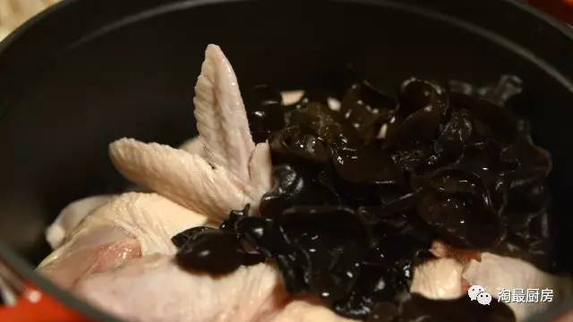
关于辅料的选择▼
黑木耳：原味鸡汤更营养
春笋：鲜度更高更美味
加入常温矿泉水，水量浸没过鸡就好
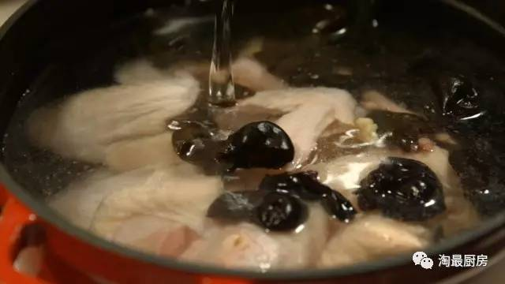
TIPS：炖汤宜冷水下锅，汤才够鲜；
相反，如果做白斩鸡，则须水开后下锅。
为什么选矿泉水？
自来水中含有氯，氯容易破坏鸡的营养价值，
烧出来汤的味道没有矿泉水鲜。
加上锅盖，大火烧开后，换小火慢炖
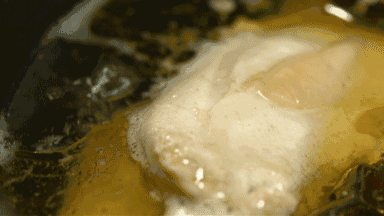
一个小时后(请耐心等待)
放入半勺盐（据个人口味而定），关火！
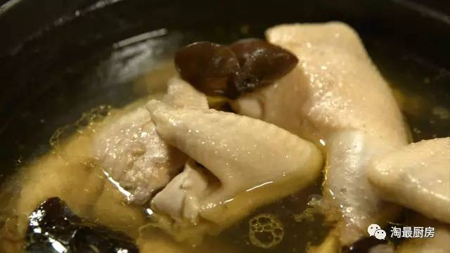
厨房小白完全可以靠这锅鸡汤讨好心爱的人！
如何挑鸡，让熊大厨告诉大家
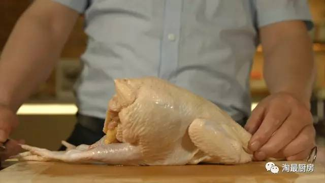
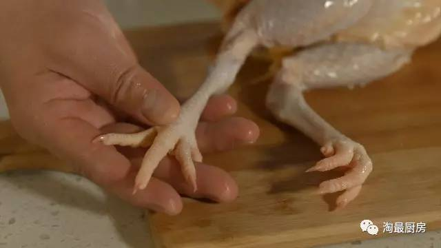
一看：整鸡白里透青，微黄，无疤痕
二看：鸡爪要细小，指甲尽量锋利
真正好的鸡做鸡汤，就不需要加其它太多东西了
接下来，熊大厨还要教给大家一道下饭神器，
我们自己也试了下，妥妥就着吃了三碗饭！
大盘鸡
◇看着材料有点多，其实不麻烦◇
鸡腿肉 半斤| 土豆 1个| 洋葱 西红柿 青椒各1/4个
配料：姜片 | 八角 | 花椒 | 辣椒 | 葱段 | 豆瓣酱
准备工作
鸡块焯水
水烧开后，将鸡块放锅里焯水，
1-2min后捞起备用
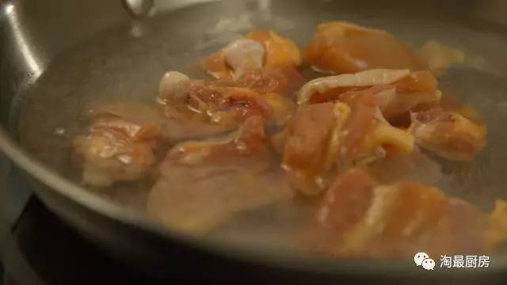
目的：去除血沫，使鸡肉收紧外皮
热锅炒制
1. 中火热锅，倒入适量油（1-2大勺）
加入适量八角、花椒、辣椒、葱段、姜片，
以及一大勺豆瓣酱，滑铲炒香
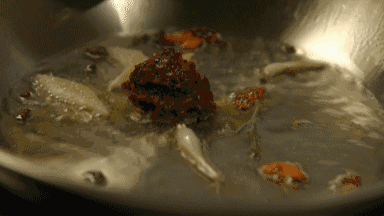
2. 加入鸡块后，倒入2-3勺酱油
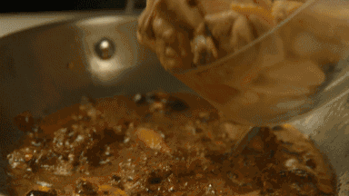
3. 鸡块翻炒变色后，
加水没过鸡块，调至大火
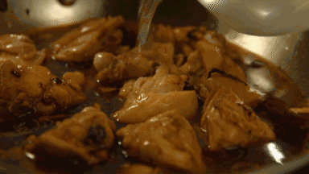
烧开后换成小火，焖约20min
（燃气灶时间可以缩短点）
4. 加入切好的土豆块，糖、盐各1勺
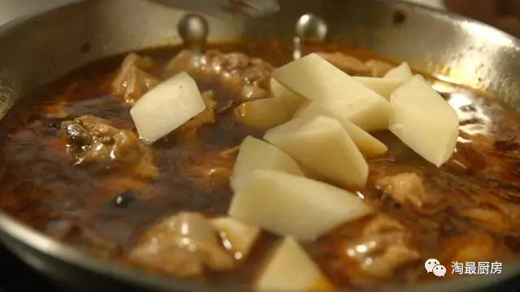
继续焖10min
5. 接着加入番茄、洋葱、青椒块，
改大火收汁
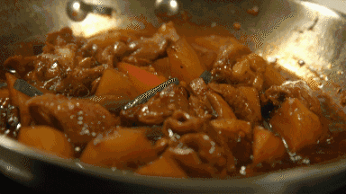
6. 等汤汁基本收完后，出锅！
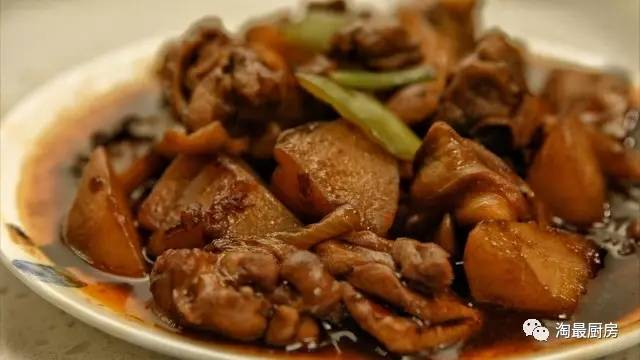